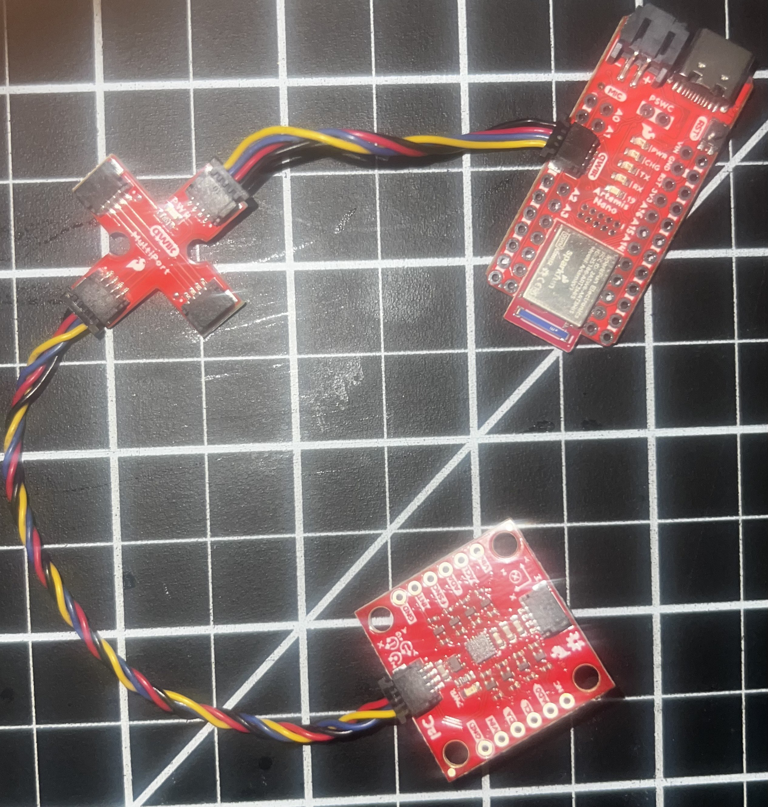
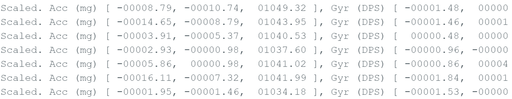
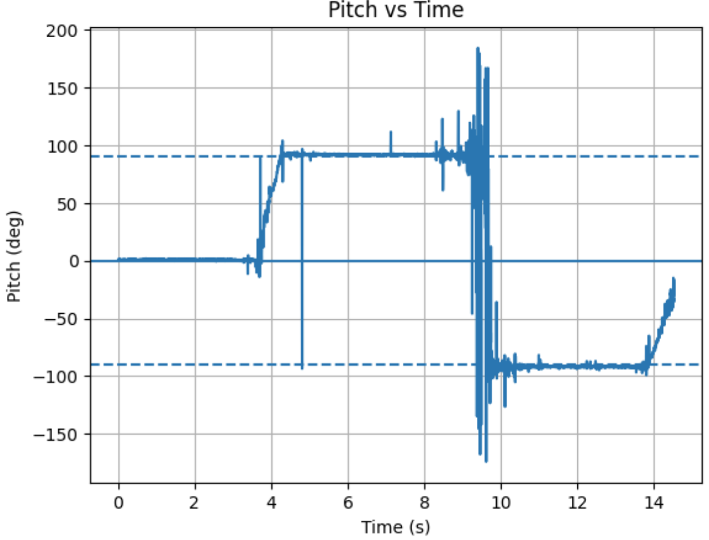
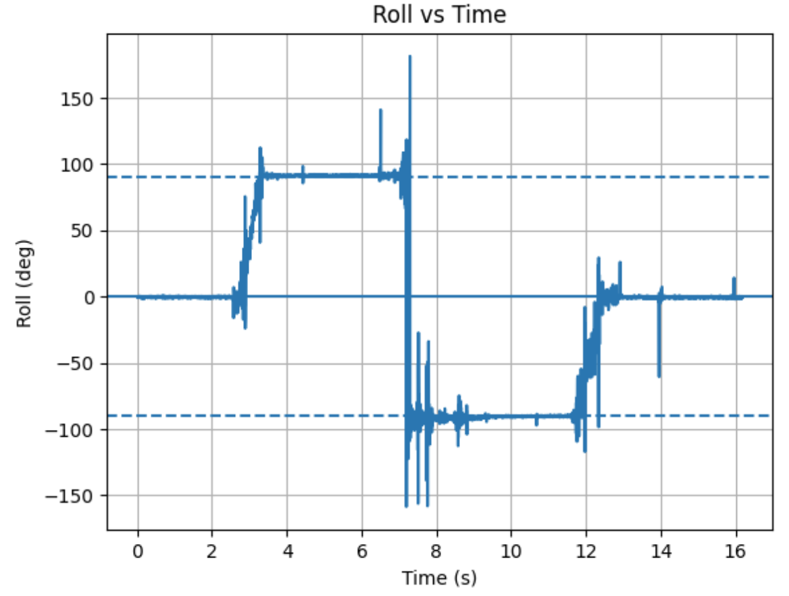
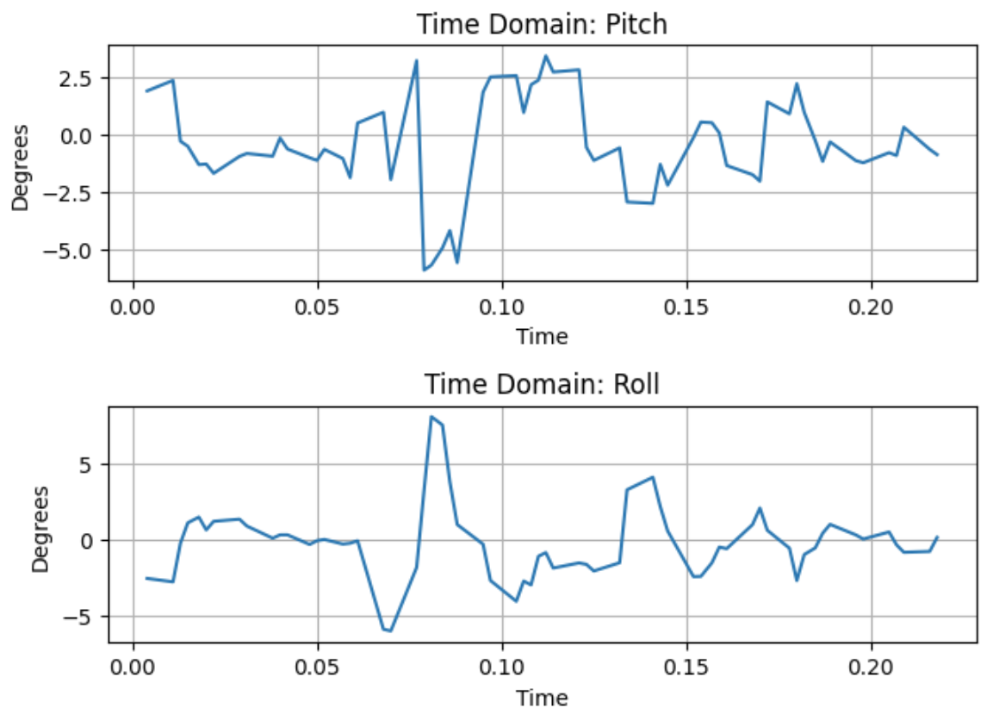
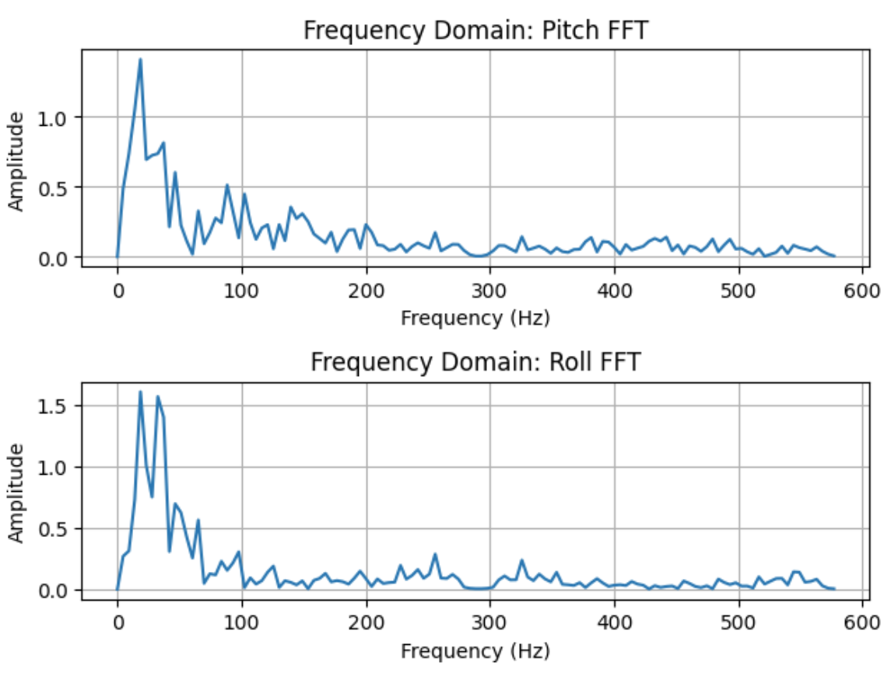
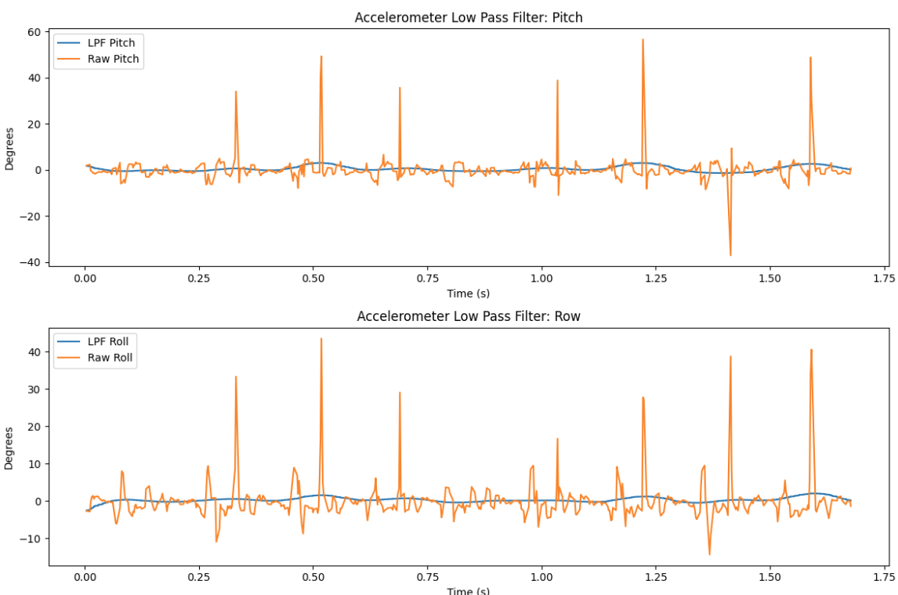
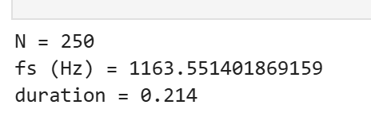
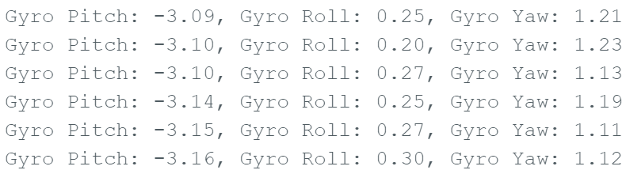
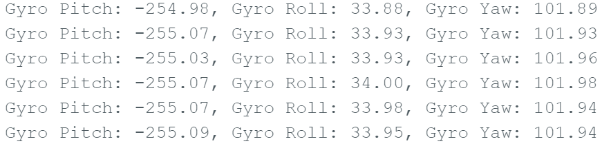

Lab 2: IMU Setup + Motion Data
This lab focuses on setting up the IMU, validating accelerometer + gyroscope readings, and collecting/sending sample data.
1. Lab Tasks
Set up the IMU
- Picture of my Artemis IMU connections
- Show that the IMU example code works
- AD0_VAL definition discussion
- Acceleration and gyroscope data discussion (pictures recommended)


2. Accelerometer
Output at {-90, 0, 90} degrees (Pitch + Roll)
case GET_ACC: {
unsigned long starttime = millis();
for (int i = 0; i < arraylength;) {
if (myICM.dataReady()) {
myICM.getAGMT();
}
const float pitch_full_range = 180.0 / (86.0 + 88.4);
const float roll_full_range = 180.0 / (89.0 + 87.4);
float accelerometer_pitch = atan2(myICM.accY(), myICM.accZ()) * 180.0 / M_PI * pitch_full_range;
float accelerometer_roll = atan2(myICM.accX(), myICM.accZ()) * 180.0 / M_PI * roll_full_range;
time_list[i] = (float)(millis() - starttime);
Acc_pitch_list[i] = accelerometer_pitch;
Acc_roll_list[i] = accelerometer_roll;
i++;
}
for (int i = 0; i < arraylength;) {
tx_estring_value.clear();
tx_estring_value.append(time_list[i]);
tx_estring_value.append("|");
tx_estring_value.append(Acc_pitch_list[i]);
tx_estring_value.append("|");
tx_estring_value.append(Acc_roll_list[i]);
tx_characteristic_string.writeValue(tx_estring_value.c_str());
i++;
}
break;
}


Accelerometer accuracy discussion
My accelerometer readings were not so precise. I saw two main problems: 1) the total angle range from -90 to 90 degrees waw actually less than 180 degrees, and the 0 degree reading was slightly offset. So to combat this I took the desired range of 180 and divided it by the accelerometer readings at the real -90 and +90 degrees. This gave me a scaling factor where I could obtain the proper range by multiplying this by the raw accelerometer angle. Then to get it to the right offset, looked at the 0 readings and subtracted the error.
Fourier Transform Analysis


Low Pass Filter Analysis


RC = 1/(2pi * fc) = 1/(2pi * 5) = .0318
alphs = ts/(tx + RC) = .214/(.214 + .0318) =
3. Gyroscope
Pitch, Roll, and Yaw documentation
static float gyro_pitch = 0.0;
static float gyro_roll = 0.0;
static float gyro_yaw = 0.0;
static unsigned long lastTime = millis();
unsigned long currentTime = millis();
float dt = (currentTime - lastTime) / 1000.0;
lastTime = currentTime;
// Read gyro rates (deg/s)
float gx = myICM.gyrX();
float gy = myICM.gyrY();
float gz = myICM.gyrZ();
// Integrate rates → angles
gyro_pitch += gx * dt;
gyro_roll += gy * dt;
gyro_yaw += gz * dt;


Complementary filter accuracy + range

4. Sample Data
Speed of sampling discussion
I measured how fast I could sample and transmit IMU data, and noted where bottlenecks happened (printing, BLE packet size, etc.).
Time-stamped IMU data stored in arrays

5 seconds of IMU data sent over Bluetooth